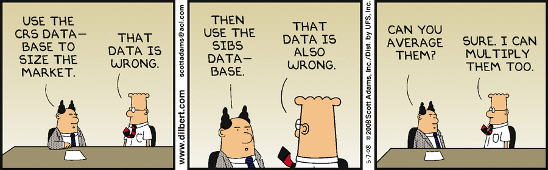
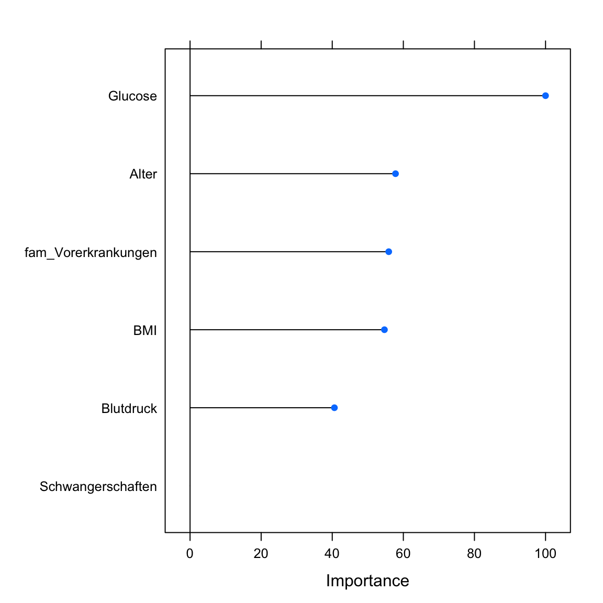
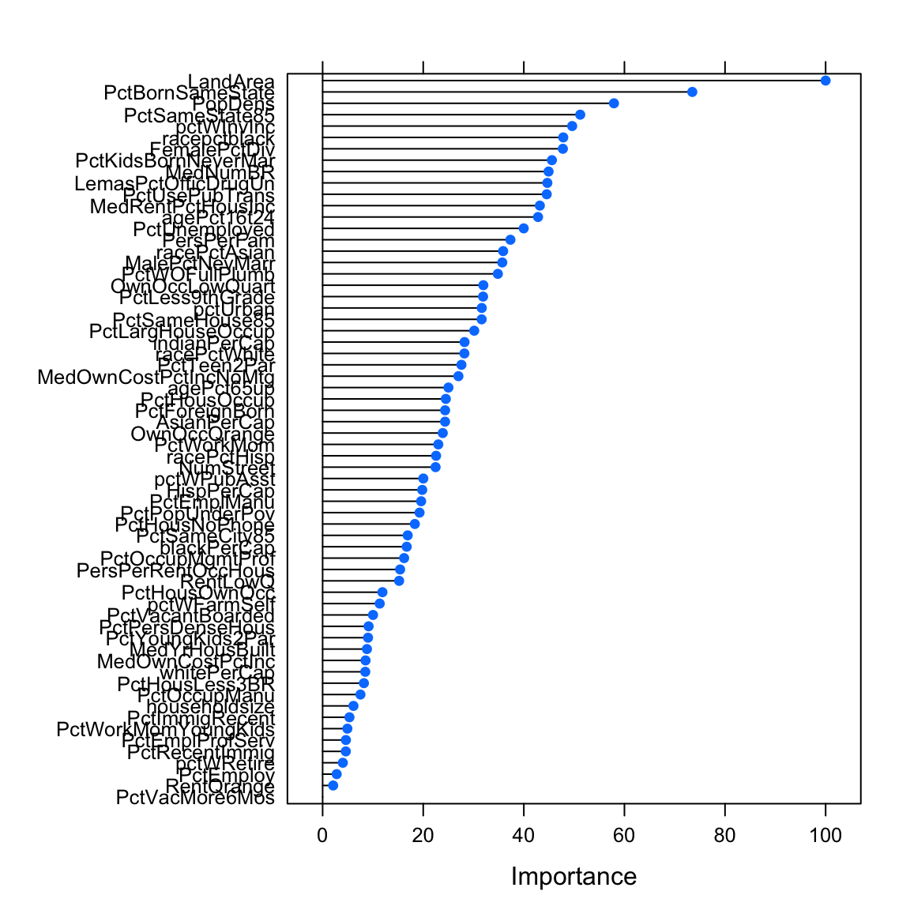

Features
|
Maschinelles Lernen mit R The R Bootcamp |

|

from dilbert.com
Überblick
Am Ende des Practicals wirst du wissen…
- Warum Featurereduktion Sinn macht.
- Wie du Features auf verschiedenen Wegen eliminieren kannst.
Aufgaben
A - Setup
Öffne dein
TheRBootcampR project. Es sollte die Ordner1_Dataund2_Codeenthalten. Stelle sicher, dass du alle Datensätze, welche imDatensätzeTab aufgelisted sind, in deinem1_DataOrdner hast.Öffne ein neues R Skript. Schreibe deinen Namen, das Datum und “Features Practical” als Kommentare an den Anfang des Skripts.
## NAME
## DATUM
## Features PracticalSpeichere das neue Skript unter dem Namen
features_practical.Rim2_CodeOrdner.Lade die Pakete
tidyverse,caret,party,partykit.
library(tidyverse)
library(caret)
library(party)
library(partykit)Datensatz 1: Diabetes
B - Lade den Diabetes Datensatz
- Verwende die
read_csv()Funktion umdiabetes.csveinzulesen.
# Lese Daten ein
diabetes <- read_csv(file = "1_Data/diabetes.csv")Printe den Datensatz.
Verwende
names(XX),summary(XX), undView()um einen weiteren Überblick über die Daten zu bekommen.Wiederum, führe den Code unten aus um sicherzustellen, dass alle
characterFeatures als Faktoren vorliegen.
# Konvertiere alle character zu factor
diabetes <- diabetes %>% mutate_if(is.character, factor)C - Trenne Training und Test
- Bevor du irgendwas machst solltest du den Datensatz erst in Traning und Test trennen. Verwende
createDataPartition()um zwei Datensätzediabetes_trainunddiabetes_testzu erstellen. Das Kriterium ist das FeatureDiabetes. Dabei sollen nur5%der Datenpunkte im Trainingsset landen. Wichtig: Setze den Random Seed auf100damit die Aufteilung reproduzierbar ist.
# Setze Random seed
set.seed(100)
# Index für Training
train_index <- createDataPartition(XX$XX, p = .05, list = FALSE)
# Kreiere Training- und Testdaten
diabetes_train <- XX %>% slice(train_index)
diabetes_test <- XX %>% slice(-train_index)# Setze Random seed
set.seed(100)
# Index für Training
train_index <- createDataPartition(diabetes$Diabetes, p = .05, list = FALSE)
# Kreiere Training- und Testdaten
diabetes_train <- diabetes %>% slice(train_index)
diabetes_test <- diabetes %>% slice(-train_index)D - Entferne ungewollte Features
- Bevor du mit der Eliminierung der Features beginnen kannst, musst du Features und Kriterium voneinander trennen.
# Wähle Features aus
diabetes_train_pred <- diabetes_train %>% select(-XX)
# Wähle Kriterium aus
diabetes_train_crit <- diabetes_train %>% select(XX)# Wähle Features aus
diabetes_train_pred <- diabetes_train %>% select(-Diabetes)
# Wähle Kriterium aus
diabetes_train_crit <- diabetes_train %>% select(Diabetes)- Nun teste ob es ggf. übermässig korrelierte Prädiktoren gibt. Berechne hierzu zunächst die Korrelationsmatrix mit
cor(). Anschliessend übergebe diese anfindCorrelation(). Gibt es Variablen die übermässig korreliert sind? Keine Werte würde nein bedeuten.
# Bestimme die Korrelationsmatrix
corr_matrix <- cor(XX_pred)
# Identifiziere übermässig korrelierte Features
findCorrelation(corr_matrix)# Bestimmte die Korrelationsmatrix
corr_matrix <- cor(diabetes_train_pred)
# Identifiziere übermässig korrelierte Features
findCorrelation(corr_matrix)integer(0)- Nun teste, ob es vll. Features mit limitierter “Varianz” gibt. Gibes es welche?
# Identifiziere Features ohne "Varianz"
nearZeroVar(XX_pred)# Identifiziere Features ohne "Varianz"
nearZeroVar(diabetes_train_pred)integer(0)- Es wurden weder übermässig korrelierte Prädiktoren gefunden, noch solche ohne “Varianz”. Füge nun Features und Kriterium wieder zu
diabetes_trainzusammen.
# Füge nun Features und Kriterium zusammen
diabetes_train <- XX_crit %>% bind_cols(XX_pred)# Füge nun Features und Kriterium zusammen
diabetes_train <- diabetes_train_crit %>% bind_cols(diabetes_train_pred)E - Featurewichtigkeit
- Featurewichtigkeit existiert nicht für sich allein, sondern kann nur innerhalb eines Modells bestimmt werden. Fitte eine logistische Regression auf die Trainingsdaten, die das Kriterium
Diabetesdurch die anderen Features vorhersagt.
# Fitte Regression
diabetes_glm <- train(Diabetes ~ .,
data = XX,
method = "XX")# Fitte Regression
diabetes_glm <- train(Diabetes ~ .,
data = diabetes_train,
method = "glm")- Berechne die Featurewichtigkeit mittels
varImp(). Der Output der Funktion präsentiert in diesem Fall die t-Werte skaliert auf den Bereich 0 bis 100. Mitscale = TRUEkönntest du dir die tatsächlichen t-Werte anzeigen lassen.
# Bestimme Featurewichtigkeit
varimp_glm <- varImp(XX)
# Printe Featurewichtigkeit
varimp_glm
# Plotte Featurewichtigkeit
plot(varimp_glm)# Bestimme Featurewichtigkeit
varimp_glm <- varImp(diabetes_glm)
# Printe Featurewichtigkeit
varimp_glmglm variable importance
Overall
Glucose 100.0
Alter 57.8
fam_Vorerkrankungen 55.9
BMI 54.7
Blutdruck 40.6
Schwangerschaften 0.0# Plotte Featurewichtigkeit
plot(varimp_glm)
F - Modellvergleiche
- Fitte nun eine zweite Regression zur Vorhersage von
Diabetes, diesmal aber unter der Verwendung nur des besten Prädiktors gemäss den Ergebnissen der letzten Sektion.
# Fitte Regression mit nur dem besten Prädiktor
diabetes_glm1 <- train(diabetes ~ XX,
data = XX,
method = XX)# Fitte Regression mit dem besten Prädiktor
diabetes_glm1 <- train(Diabetes ~ Glucose,
data = diabetes_train,
method = "glm")- Vergleiche auf die bekannte Art und Weise, wie gut die Modelle die Trainings und die Testdaten erklären. Wie unterschiedlich sind die Modelle im Traning, wie unterschiedlich im Test? Welches ist besser?
# Evaluation des Tranings
confusionMatrix(predict(XX), reference = XX)
confusionMatrix(predict(XX), reference = XX)
# Evaluation des Tests
confusionMatrix(predict(XX, newdata = XX), reference = XX)
confusionMatrix(predict(XX, newdata = XX), reference = XX)# Evaluation des Tranings
confusionMatrix(predict(diabetes_glm), reference = diabetes_train$Diabetes)Confusion Matrix and Statistics
Reference
Prediction neg pos
neg 22 1
pos 2 12
Accuracy : 0.919
95% CI : (0.781, 0.983)
No Information Rate : 0.649
P-Value [Acc > NIR] : 0.000161
Kappa : 0.825
Mcnemar's Test P-Value : 1.000000
Sensitivity : 0.917
Specificity : 0.923
Pos Pred Value : 0.957
Neg Pred Value : 0.857
Prevalence : 0.649
Detection Rate : 0.595
Detection Prevalence : 0.622
Balanced Accuracy : 0.920
'Positive' Class : neg
confusionMatrix(predict(diabetes_glm1), reference = diabetes_train$Diabetes)Confusion Matrix and Statistics
Reference
Prediction neg pos
neg 21 8
pos 3 5
Accuracy : 0.703
95% CI : (0.53, 0.841)
No Information Rate : 0.649
P-Value [Acc > NIR] : 0.308
Kappa : 0.285
Mcnemar's Test P-Value : 0.228
Sensitivity : 0.875
Specificity : 0.385
Pos Pred Value : 0.724
Neg Pred Value : 0.625
Prevalence : 0.649
Detection Rate : 0.568
Detection Prevalence : 0.784
Balanced Accuracy : 0.630
'Positive' Class : neg
# Evaluation des Tests
confusionMatrix(predict(diabetes_glm, newdata = diabetes_test), reference = diabetes_test$Diabetes)Confusion Matrix and Statistics
Reference
Prediction neg pos
neg 374 94
pos 77 142
Accuracy : 0.751
95% CI : (0.717, 0.783)
No Information Rate : 0.656
P-Value [Acc > NIR] : 5.31e-08
Kappa : 0.438
Mcnemar's Test P-Value : 0.221
Sensitivity : 0.829
Specificity : 0.602
Pos Pred Value : 0.799
Neg Pred Value : 0.648
Prevalence : 0.656
Detection Rate : 0.544
Detection Prevalence : 0.681
Balanced Accuracy : 0.715
'Positive' Class : neg
confusionMatrix(predict(diabetes_glm1, newdata = diabetes_test), reference = diabetes_test$Diabetes)Confusion Matrix and Statistics
Reference
Prediction neg pos
neg 378 107
pos 73 129
Accuracy : 0.738
95% CI : (0.703, 0.771)
No Information Rate : 0.656
P-Value [Acc > NIR] : 2.63e-06
Kappa : 0.398
Mcnemar's Test P-Value : 0.0139
Sensitivity : 0.838
Specificity : 0.547
Pos Pred Value : 0.779
Neg Pred Value : 0.639
Prevalence : 0.656
Detection Rate : 0.550
Detection Prevalence : 0.706
Balanced Accuracy : 0.692
'Positive' Class : neg
- Wahrscheinlich hast du beobachtet, dass das Modell mit vielen Prädiktoren im Test deutlich schwächer als im Traning war, aber auch, dass es immer noch leicht besser als das Modell mit nur einem Prädiktor war. Unter welchen Bedingungen würdest du erwarten, dass das Modell mit nur einem Prädiktor die Oberhand im Test erhält?
Datensatz 2: Murders
G - Lade den Murders Datensatz
- Verwende die
read_csv()Funktion ummurders_crime.csveinzulesen.
# Lese Daten ein
murders <- read_csv(file = "1_Data/murders_crime.csv")Printe den Datensatz.
Verwende
names(XX),summary(XX), undView()um einen weiteren Überblick über die Daten zu bekommen.Wiederum, führe den Code unten aus um sicherzustellen, dass alle
characterFeatures als Faktoren vorliegen.
# Konvertiere alle character zu factor
murders <- murders %>% mutate_if(is.character, factor)H - Trenne Training und Test
- Trenne den Datensatz in Traning und Test trennen. Verwende
createDataPartition()um zwei Datensätzemurders_trainundmurders_testzu erstellen. Das Kriterium istmurders. Dabei sollen nur25%der Datenpunkte im Trainingsset landen. Wichtig: Setze den Random Seed auf100damit die Aufteilung reproduzierbar ist.
# Setze Random seed
set.seed(100)
# Index für Training
train_index <- createDataPartition(XX$XX, p = .25, list = FALSE)
# Kreiere Training- und Testdaten
murders_train <- XX %>% slice(train_index)
murders_test <- XX %>% slice(-train_index)# Setze Random seed
set.seed(100)
# split index
train_index <- createDataPartition(murders$murders, p = .25, list = FALSE)
# train and test sets
murders_train <- murders %>% slice(train_index)
murders_test <- murders %>% slice(-train_index)I - Entferne ungwollte Features
- Bevor du mit der Eliminierung der Features beginnst, trenne Features und Kriterium voneinander.
# Wähle Features aus
murders_train_pred <- murders_train %>% select(-XX)
# Wähle Kriterium aus
murders_train_crit <- murders_train %>% select(XX)# Wähle Features aus
murders_train_pred <- murders_train %>% select(-murders)
# Wähle Kriterium aus
murders_train_crit <- murders_train %>% select(murders)- Nun teste ob es ggf. übermässig korrelierte Prädiktoren gibt. Berechne hierzu zunächst die Korrelationsmatrix mit
cor(). Anschliessend übergebe diese anfindCorrelation(). Gibt es Variablen die übermässig korreliert sind? Keine Werte würde nein bedeuten.
# Bestimmte die Korrelationsmatrix
corr_matrix <- cor(XX_pred)
# Identifiziere übermässig korrelierte Features
findCorrelation(corr_matrix)# Bestimmte die Korrelationsmatrix
corr_matrix <- cor(murders_train_pred)
# Identifiziere übermässig korrelierte Features
findCorrelation(corr_matrix) [1] 8 11 17 27 30 41 44 49 53 54 55 57 58 59 60 61 64 65 71 80 81 84 85
[24] 87 91 7 14 13 20 21 31 38 43 1 62 67 51- Verwende den Code unten um die übermässig korrelierten Features zu entfernen.
# Entferne korrelierte Features
murders_train_pred <- murders_train_pred %>% select(-findCorrelation(corr_matrix))- Nun teste, ob es Prädiktoren mit limitierter “Varianz” gibt. Gibes es welche?
# Identifiziere Features ohne "Varianz"
nearZeroVar(XX_pred)# Identifiziere Features ohne "Varianz"
nearZeroVar(murders_train_pred)integer(0)- Verwende den code unten um die Prädiktoren ohne “Varianz” zu entfernen.
# Entferne Features ohne Varianz
murders_train_pred <- murders_train_pred %>% select(-nearZeroVar(murders_train_pred))- Füge nun Features und Kriterium als neuen Trainingsdatensatz
murders_train_reduziertzusammen.
# Füge nun Features und Kriterium zusammen
murders_train_reduziert <- XX_crit %>% bind_cols(XX_pred)# Füge nun Features und Kriterium zusammen
murders_train_reduziert <- murders_train_crit %>% bind_cols(murders_train_pred)J - Featurewichtigkeit
- Fitte eine logistische Regression auf die reduzierten Traningsdaten
murders_train_reduziert, die das Featuremurdersdurch die anderen Feature vorhersagt.
# Fitte Regression
murders_glm_reduziert <- train(murders ~ .,
data = XX,
method = "XX")# Fitte Regression
murders_glm_reduziert <- train(murders ~ .,
data = murders_train_reduziert,
method = "glm")- Berechne und Plotte die Featurewichtigkeit mittels
varImp()
# Bestimme Featurewichtigkeit
varimp_glm <- varImp(XX)
# Printe Featurewichtigkeit
varimp_glm
# Plotte Featurewichtigkeit
plot(varimp_glm)# Bestimme Featurewichtigkeit
varimp_glm <- varImp(murders_glm_reduziert)
# Printe Featurewichtigkeit
varimp_glmglm variable importance
only 20 most important variables shown (out of 64)
Overall
LandArea 100.0
PctBornSameState 73.5
PopDens 57.9
PctSameState85 51.2
pctWInvInc 49.6
racepctblack 47.8
FemalePctDiv 47.8
PctKidsBornNeverMar 45.6
MedNumBR 44.9
LemasPctOfficDrugUn 44.7
PctUsePubTrans 44.6
MedRentPctHousInc 43.2
agePct16t24 42.8
PctUnemployed 40.0
PersPerFam 37.3
racePctAsian 35.9
MalePctNevMarr 35.7
PctWOFullPlumb 34.8
OwnOccLowQuart 32.0
PctLess9thGrade 31.9# Plotte Featurewichtigkeit
plot(varimp_glm)
- Benutze den folgenden Code um zwei neue Trainingsdatensätze zu generieren, einen der nur Features mit
Importance > 50und einen der nur Features mitImportance > 30enthält.
# Features mit Imp > 50
murders_train_reduziert50 <- murders_train_reduziert %>%
select(1, which(varimp_glm$importance > 50) + 1)
# Features mit Imp > 30
murders_train_reduziert30 <- murders_train_reduziert %>%
select(1, which(varimp_glm$importance > 30) + 1)K - Datenkomprimierung mit PCA
- Eine Alternative zu manueller Featurereduktion ist die
principal component analysis. Fitte zwei Regressionsmodelle, diemurdersdurch die anderen Features vorhersagen unter Verwendung des ArgumentspreProcess = c("pca"). Zusätzlich verwende dastrControlArgument um festzulegen, wie viel Varianz durch die PCA aufgeklärt werden soll. Siehe Code.
# Fitte Regression mit 80% Varianz präserviert
murders_glm_pca80 = train(murders ~ .,
data = murders_train,
method = "glm",
preProcess = c("pca"),
trControl = trainControl(preProcOptions = list(thresh = .8)))
# Fitte Regression mit 50% Varianz präserviert
murders_glm_pca50 = train(murders ~ .,
data = murders_train,
method = "glm",
preProcess = c("pca"),
trControl = trainControl(preProcOptions = list(thresh = .5)))L - Modellvergleiche
- Fitte jeweils eigene Regressionsmodelle unter Verwendung des ursprünglichen Trainingsdatensatzes
murders_trainund den Trainingsdatensätzenmurders_train_reduziert50undmurders_train_reduziert30.
# Fitte Regression mit reduziertem Datensatz
murders_glm <- train(murders ~ .,
data = murders_train,
method = "glm")
# Fitte Regression mit reduziertem Datensatz mit Features mit Imp > 50
murders_glm_reduziert50 <- train(murders ~ .,
data = murders_train_reduziert50,
method = "glm")
# Fitte Regression mit reduziertem Datensatz mit Features mit Imp > 20
murders_glm_reduziert30 <- train(murders ~ .,
data = murders_train_reduziert30,
method = "glm")- Vergleiche die Modelle
murders_glm,murders_glm_reduziert,murders_glm_reduziert50,murders_glm_reduziert30,murders_glm_pca80,murders_glm_pca50in ihrer Fähigkeit die Testdaten vorherzusagen. Waren die Strategien der Featurereduktion erfolgreich? Welche Strategien waren am erfolgreichsten?
# Evaluation des Tests für murders_glm
confusionMatrix(predict(murders_glm,
newdata = murders_test),
reference = murders_test$murders)Confusion Matrix and Statistics
Reference
Prediction no yes
no 430 187
yes 200 550
Accuracy : 0.717
95% CI : (0.692, 0.741)
No Information Rate : 0.539
P-Value [Acc > NIR] : <2e-16
Kappa : 0.429
Mcnemar's Test P-Value : 0.542
Sensitivity : 0.683
Specificity : 0.746
Pos Pred Value : 0.697
Neg Pred Value : 0.733
Prevalence : 0.461
Detection Rate : 0.315
Detection Prevalence : 0.451
Balanced Accuracy : 0.714
'Positive' Class : no
# Evaluation des Tests für murders_glm_reduziert
confusionMatrix(predict(murders_glm_reduziert,
newdata = murders_test),
reference = murders_test$murders)Confusion Matrix and Statistics
Reference
Prediction no yes
no 471 187
yes 159 550
Accuracy : 0.747
95% CI : (0.723, 0.77)
No Information Rate : 0.539
P-Value [Acc > NIR] : <2e-16
Kappa : 0.492
Mcnemar's Test P-Value : 0.147
Sensitivity : 0.748
Specificity : 0.746
Pos Pred Value : 0.716
Neg Pred Value : 0.776
Prevalence : 0.461
Detection Rate : 0.345
Detection Prevalence : 0.481
Balanced Accuracy : 0.747
'Positive' Class : no
# Evaluation des Tests für murders_glm_reduziert50
confusionMatrix(predict(murders_glm_reduziert50,
newdata = murders_test),
reference = murders_test$murders)Confusion Matrix and Statistics
Reference
Prediction no yes
no 403 255
yes 227 482
Accuracy : 0.647
95% CI : (0.621, 0.673)
No Information Rate : 0.539
P-Value [Acc > NIR] : 3.21e-16
Kappa : 0.293
Mcnemar's Test P-Value : 0.219
Sensitivity : 0.640
Specificity : 0.654
Pos Pred Value : 0.612
Neg Pred Value : 0.680
Prevalence : 0.461
Detection Rate : 0.295
Detection Prevalence : 0.481
Balanced Accuracy : 0.647
'Positive' Class : no
# Evaluation des Tests für murders_glm_reduziert30
confusionMatrix(predict(murders_glm_reduziert30,
newdata = murders_test),
reference = murders_test$murders)Confusion Matrix and Statistics
Reference
Prediction no yes
no 469 198
yes 161 539
Accuracy : 0.737
95% CI : (0.713, 0.761)
No Information Rate : 0.539
P-Value [Acc > NIR] : <2e-16
Kappa : 0.474
Mcnemar's Test P-Value : 0.0574
Sensitivity : 0.744
Specificity : 0.731
Pos Pred Value : 0.703
Neg Pred Value : 0.770
Prevalence : 0.461
Detection Rate : 0.343
Detection Prevalence : 0.488
Balanced Accuracy : 0.738
'Positive' Class : no
# Evaluation des Tests für murders_glm_pca80
confusionMatrix(predict(murders_glm_pca80,
newdata = murders_test),
reference = murders_test$murders)Confusion Matrix and Statistics
Reference
Prediction no yes
no 506 186
yes 124 551
Accuracy : 0.773
95% CI : (0.75, 0.795)
No Information Rate : 0.539
P-Value [Acc > NIR] : < 2e-16
Kappa : 0.547
Mcnemar's Test P-Value : 0.000531
Sensitivity : 0.803
Specificity : 0.748
Pos Pred Value : 0.731
Neg Pred Value : 0.816
Prevalence : 0.461
Detection Rate : 0.370
Detection Prevalence : 0.506
Balanced Accuracy : 0.775
'Positive' Class : no
# Evaluation des Tests für murders_glm_pca50
confusionMatrix(predict(murders_glm_pca50,
newdata = murders_test),
reference = murders_test$murders)Confusion Matrix and Statistics
Reference
Prediction no yes
no 467 195
yes 163 542
Accuracy : 0.738
95% CI : (0.714, 0.761)
No Information Rate : 0.539
P-Value [Acc > NIR] : <2e-16
Kappa : 0.475
Mcnemar's Test P-Value : 0.101
Sensitivity : 0.741
Specificity : 0.735
Pos Pred Value : 0.705
Neg Pred Value : 0.769
Prevalence : 0.461
Detection Rate : 0.342
Detection Prevalence : 0.484
Balanced Accuracy : 0.738
'Positive' Class : no
X - Challenges: Violent & Non-violent Crime Data
Versuche neue Trainingsdatensätze unter Verwendung manueller Reduktion oder PCA zu generieren die zu noch besseren Vorhersagen führen.
Verwende Random Forest anstatt Regression als zugrundeliegendes Modell. Achte darauf, dass
mtrynicht zu hoch ist, damit es nicht so lange dauert.Für die Datensätze
violent_crime.csvundnonviolent_crime.csvmodelliereViolentCrimesPerPoprespektivenonViolPerPopals Funktion einer sinnvollen Auswahl an Featuren. Beide Kriterien sind numerisch, was bedeutet, dass es sich hier um ein Regressionsproblem handelt.
Beispiele
# Schritt 0: Pakete laden-----------
library(tidyverse)
library(caret)
library(party)
library(partykit)
# Schritt 1: Lade Daten ----------------------
# Lese Daten
data <- mpg
# Konvertiere character in factor
data <- data %>%
mutate_if(is.character, factor)
# Schritt 2: Kreiere Training und Test -------------
# Kreiere Trainingsindex
train_index <- createDataPartition(criterion,
p = .8,
list = FALSE)
# Kreiere Training und Test
data_train <- data %>% slice(train_index)
data_test <- data %>% slice(-train_index)
# Trenne Features und Kriterium
criterion_train <- data_train %>% select(hwy) %>% pull()
predictors_train <- data_train %>% select(-hwy)
criterion_test <- data_test %>% select(hwy) %>% pull()
predictors_test <- data_test %>% select(-hwy)
# Schritt 3: Bereinige Daten -------------
# Teste auf Multikollinearität
corr_matrix <- cor(predictors_train)
corr_features <- findCorrelation(corr_matrix)
# Entferene exzessiv korrelierte Feature
predictors_train <- predictors_train %>% select(-corr_features)
# Teste auf zu wenig "Varianz"
zerovar_features <- nearZeroVar(predictors_train)
# Entferene Feature mit zu wenig "Varianz"
predictors_train <- predictors_train %>% select(-zerovar_features)
# Verbinde Prädiktoren und Kriterium
data_train <- predictors_train %>% add_column(hwy = criterion_train)
# Schritt 4: Definiere Kontrollparameter -------------
# Trainiere mittels Cross-Validation
ctrl_cv <- trainControl(method = "cv")
# Schritt 5: Fitte die Modelle -------------
# Fitte vanilla flavor Regression
hwy_glm <- train(form = hwy ~ .,
data = data_train,
method = "glm",
trControl = ctrl_cv)
# Fitte mit PCA transformation
hwy_glm_pca <- train(form = hwy ~ .,
data = data_train,
method = "glm",
trControl = ctrl_cv,
preProcess = c('pca'))
# Fitte mit Standardisierung
hwy_glm_sca <- train(form = hwy ~ .,
data = data_train,
method = "glm",
trControl = ctrl_cv,
preProcess = c('scale', 'center'))
# Extrahiere fits
glm_fit <- predict(hwy_glm)
glm_pca_fit <- predict(hwy_glm_pca)
glm_sca_fit <- predict(hwy_glm_sca)
# Schritt 6: Evaluiere die Featurewichtigkeiet -------------
# Berechne Wichtigkeit
imp_glm <- varImp(hwy_glm)
imp_glm_pca <- varImp(hwy_glm_pca)
imp_glm_sca <- varImp(hwy_glm_sca)
# Plotte Wichtigkeit
plot(imp_glm)
plot(imp_glm_pca)
plot(imp_glm_sca)
# Schritt 7: Wähle Variablen aus -------------
# Per Hand
hwy_glm_sel <- train(form = hwy ~ cty,
data = data_train,
method = "glm",
trControl = ctrl_cv)
# Setze PCA Varianz auf 50%
ctrl_cv_pca <- trainControl(method = "cv",
preProcOptions = list(thresh = 0.50))
# Modell mit PCA mit 50% Varianz
hwy_glm_sel <- train(form = hwy ~ .,
data = data_train,
method = "glm",
trControl = ctrl_cv_pca,
preProcess = c('pca'))
# Schritt 8: Rekursive Featurerediktion -------------
# RFE Einstellungen
ctrl_rfe <- rfeControl(functions = lmFuncs, # linear model
method = "cv",
verbose = FALSE)
# RFE
profile <- rfe(x = predictors_train,
y = criterion_train,
sizes = c(1, 2, 3), # Kandidaten
rfeControl = ctrl_rfe)
# Plotte Ergebnisse
trellis.par.set(caretTheme())
plot(profile, type = c("g", "o"))
# Schritt 9: Evaluiere die Modelle -------------
# Ihr wisst wie...Datensätze
| Datei | Zeilen | Spalten |
|---|---|---|
| diabetes.csv | 724 | 7 |
| murders_crime.csv | 1000 | 102 |
| violent_crime.csv | 1000 | 102 |
| nonviolent_crime.csv | 1000 | 102 |
diabetes
Der diabetes Datensatz entstammt dem PimaIndiansDiabetes Datensatz aus dem mlbench Paket. Er beinhaltet medizinische und demographische Daten der Pima.
Die Pima sind eine in Arizona lebende Untergruppe der Indianer. Eine genetische Prädisposition erlaubte es ihnen sich jahrelang von einer sehr kohlenhydratarmen Diät zu ernähren. Der Wechsel von traditionellem Anbau zu industriell verarbeiteten Nahrungsmitteln zusammen mit einem Rückgang physischer Aktivität hat bei den Pima zu einer sehr hohen Rate and Typ 2 Diabetes geführt. Aus diesem Grund sind sie Gegenstand vieler medizinischer Untersuchungen.
| Name | Beschreibung | |
|---|---|---|
| Diabetes | Diagnose: positiv (pos) oder negativ (pos) | |
| Schwangerschaften | Anzahl Schwangerschaften | |
| Glucose | Glukosekonzentration im Plasma | |
| Blutdruck | Diastolischer Blutdruck | |
| BMI | Body Mass Index | |
| fam_Vorerkrankungen | Familiäre Vorerkrankungen (pedigree function) | |
| Alter | Alter in Jahren |
murders_crime, violent_crime, und non_violent_crime
Die Datensätze murders_crime, violent_crime, und non_violent_crime entstammen dem Communities and Crime Unnormalized Data Set aus dem UCI Machine Learning Repository. Für die Featurebeschreibungen siehe: Communities and Crime Unnormalized Data Set. Aufgrund der grossen Anzahl der Feature (102) verzichten wir auf hier auf die Tabelle.
Der Datensatz kombiniert sozio-demographische Daten des US 1990 Zensus, Daten aus dem Law Enforcement Management and Admin Stats Survey, und Kriminaldaten des FBI.
Funktionen
Pakete
| Paket | Installation |
|---|---|
tidyverse |
install.packages("tidyverse") |
caret |
install.packages("caret") |
partykit |
install.packages("partykit") |
party |
install.packages("party") |
Funktionen
| Funktion | Paket | Beschreibung |
|---|---|---|
trainControl() |
caret |
Definiere wie das Modell trainiert wird |
train() |
caret |
Trainiere (fitte) ein Modell |
predict(object, newdata) |
stats |
Vorhersage des Kriteriumswerts in newdata |
postResample() |
caret |
Evaluiere Performanz in Regressionsfällen |
confusionMatrix() |
caret |
Evaluiere Performanz in Klassifikationsfällen |
varImp() |
caret |
Determiniere modellspezifische, wichtige Features |
findCorrelation(), nearZeroVar() |
caret |
Identifiziere hochkorrelierte Features und Features mit fast keiner Varianz. |
rfe(), rfeControl() |
caret |
Verwende und kontrolliere rekursive Featureselektion. |
Materialien
Cheatsheet
from github.com/rstudio